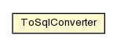

pt.ist.fenixframework.pstm
Class ToSqlConverter

java.lang.Object
 pt.ist.fenixframework.pstm.ToSqlConverter
pt.ist.fenixframework.pstm.ToSqlConverter
public class ToSqlConverter
- extends Object
| Methods inherited from class java.lang.Object |
clone, equals, finalize, getClass, hashCode, notify, notifyAll, toString, wait, wait, wait |
ToSqlConverter
public ToSqlConverter()
getValueForEnum
public static String getValueForEnum(Enum value)
getValueForboolean
public static boolean getValueForboolean(boolean value)
getValueForbyte
public static byte getValueForbyte(byte value)
getValueForchar
public static char getValueForchar(char value)
getValueForshort
public static short getValueForshort(short value)
getValueForint
public static int getValueForint(int value)
getValueForfloat
public static float getValueForfloat(float value)
getValueForlong
public static long getValueForlong(long value)
getValueFordouble
public static double getValueFordouble(double value)
getValueForBoolean
public static Boolean getValueForBoolean(Boolean value)
getValueForByte
public static Byte getValueForByte(Byte value)
getValueForCharacter
public static Character getValueForCharacter(Character value)
getValueForShort
public static Short getValueForShort(Short value)
getValueForInteger
public static Integer getValueForInteger(Integer value)
getValueForFloat
public static Float getValueForFloat(Float value)
getValueForLong
public static Long getValueForLong(Long value)
getValueForDouble
public static Double getValueForDouble(Double value)
getValueForString
public static String getValueForString(String value)
getValueForbytearray
public static Object getValueForbytearray(byte[] value)
getValueForDateTime
public static Timestamp getValueForDateTime(org.joda.time.DateTime value)
getValueForLocalDate
public static String getValueForLocalDate(org.joda.time.LocalDate value)
getValueForLocalTime
public static Time getValueForLocalTime(org.joda.time.LocalTime value)
getValueForPartial
public static String getValueForPartial(org.joda.time.Partial value)
Copyright © 2013. All Rights Reserved.